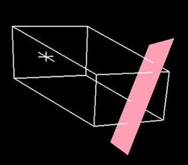

用导航打开主题
灵长类动物 RT 是最简单的算法，因此也是最快的。它只使用一个平面来分离 3D RGB 颜色空间，因此, 没有能力像上述 Primatte 算法一样仔细地将前景从背衬屏幕中分离出来。就像 灵长类动物 RT 算法, 灵长类动物 RT 在不太饱和的背衬屏幕颜色下可能无法正常工作，而且它也不支持 补语 颜色溢出抑制方法 (这是提供最佳细节的溢出抑制方法)。对于光线充足且拍摄良好的图像或剪辑，该算法会产生良好的结果，并快速呈现。
这是什么视觉表现 灵长类动物 RT 图像处理后的算法如下:
